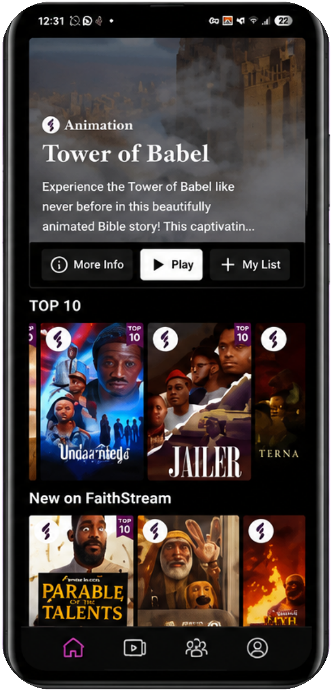

Pastor Kunle Falodun
CEO / Co-Founder
Faith-based media & technology — transforming Christian entertainment through world-class storytelling and purpose-driven content.
House of Faith is a faith-based media and technology company founded by Pastor Kunle Falodun and Hakeem Condotti. The organization is committed to transforming Christian entertainment through world-class storytelling, innovative technology, and purpose-driven content that reflects biblical values and authentic African perspectives.
Through films, television series, podcasts, devotionals, books, live events, and digital platforms, House of Faith is building an ecosystem that inspires, uplifts, and connects audiences across Africa and the global diaspora.
FaithStream, House of Faith's flagship streaming platform, brings together inspiring, family-friendly Christian content in one place. You can download the app from the Google Play Store or the Apple App Store to enjoy movies, series, devotionals, and more — anytime, anywhere.
Want to know more about your team? →Africa's first premium faith-based streaming platform. Movies, series, animation, and devotionals that inspire — from Tower of Babel to the Top 10 trending titles, all in one app.
